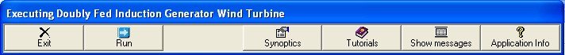

This is the basic control synoptic of the configuration.

The functionality of each of the buttons in it is the following:
•"Exit" forces the exit of the application.
•"Run" , "Stop", "Continue" control the execution of the simulation.
•"Synoptics" presents a popup menu (see next figure) where you can present or hide synoptics.

If the icon in the list is checked then the corresponding synoptic is visible, otherwise is made not visible.
•"Tutorials" presents the help tutorials associated to the DualSpeedActiveStallWTSilumator configuration.
•"Show messages" is a permanent message box used by the applications to send specific messages to the user. Its contents depends on the application.
•"Application info" presents the version information for each of the components of the configuration. See next figure.

It also provides access to the "License Information", through the "LicenseInfo" menu. See next figure.

The "License ID" is the reference for any communication with the manufacturer regarding license issues.